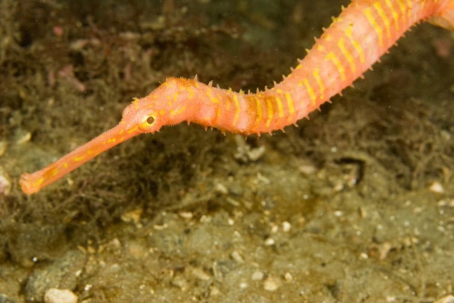
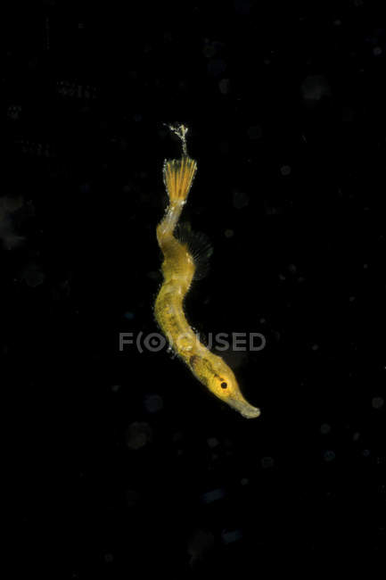
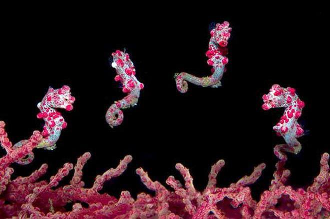
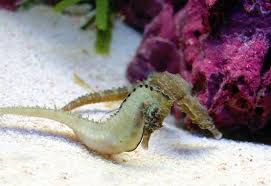
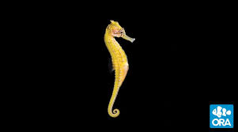
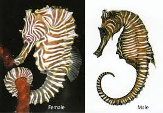

Seahorse Species
Home
A Seahorse's Life Cycle
Species
Diet
Endangered Species
Sources
47 species of seahorses have been discovered.
Seahorses are under the genus Hippocampus. From the Latin, Hippocampus translates to "Horse Caterpillar."
- Pipehorse


- Bigbelly seahorse
- Winged seahorse
- West African seahorse
- Western spiny seahorse
- Barbour's seahorse
- Pygmy seahorse

- False-eye seahorse
- Réunion seahorse
- Shorthead seahorse
- Giraffe seahorse
- Knysna seahorse
- Coleman's Pygmy seahorse
- Tiger tail seahorse
- Crowned seahorse
- Softcoral seahorse
- Denise's pygmy seahorse
- Northern seahorse
- Fisher's seahorse
- Sea pony

- Long-snouted seahorse
- Short-snouted seahorse
- Spiny seahorse
- Giant seahorse
- Jayakar's seahorse
- Collared seahorse
- Great seahorse
- Common/spotted seahorse

- Lichtenstein's seahorse
- Bullneck seahorse
- Japanese seahorse
- Monte bello seahorse
- Patagonian seahorse
- Weedy pygmy seahorse
- Highcrown seahorse
- Dwarf thorny seahorse
- Longsnout seahorse
- Satomi's pygmy seahorse
- Severn's pygmy seahorse
- Shiho's seahorse
- Queensland seahorse
- West australian seahorse
- Three-spot seahorse
- Hippocampus tyro
- Walea pygmy seahorse
- White's seahorse
- Zebra seahorse

- Dwarf seahorse
Home